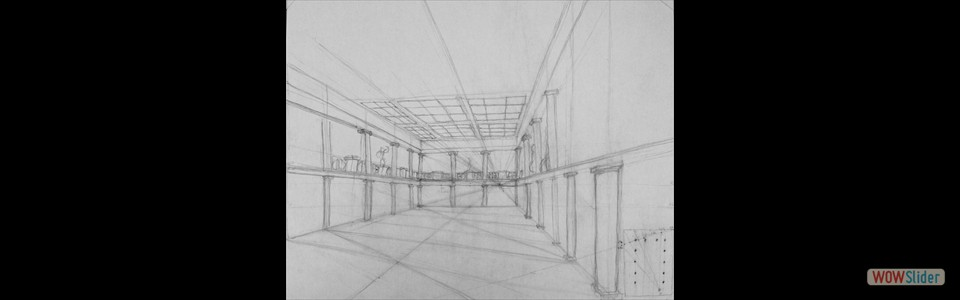
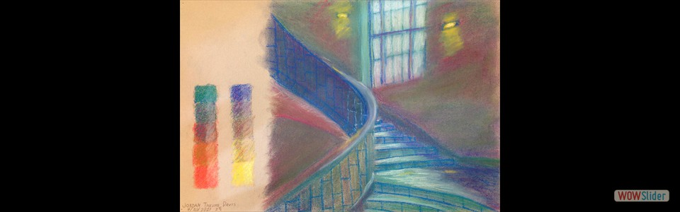

- Drawn in pencil. Carnegie Museum of Art
 Drawn in pencil.
College of Fine Arts, CMU
Drawn in pencil.
College of Fine Arts, CMU Drawn in pencil.
Purnell Center of the Arts, CMU
Drawn in pencil.
Purnell Center of the Arts, CMU- Drawn in black and white pencil on gray charcoal paper. College of Fine Arts, CMU
 Drawn in black and white pencil on gray charcoal paper.
College of Fine Arts Facade, CMU
Drawn in black and white pencil on gray charcoal paper.
College of Fine Arts Facade, CMU College of Fine Arts, CMU
College of Fine Arts, CMU College of Fine Arts Statue, CMU
College of Fine Arts Statue, CMU Plant, CMU
Plant, CMU College of Fine Arts Facade, CMU
College of Fine Arts Facade, CMU Margaret Morrison Carnegie Hall, CMU
Margaret Morrison Carnegie Hall, CMU Baker Hall, CMU
Baker Hall, CMU- Baker Hall, CMU
 Gates Hillman Center, CMU
Gates Hillman Center, CMU Gates Hillman Center, CMU
Gates Hillman Center, CMU
 2
2 3
3 4
4 6
6 8
8 9
9 10
10wowslider.com by WOWSlider.com v8.7